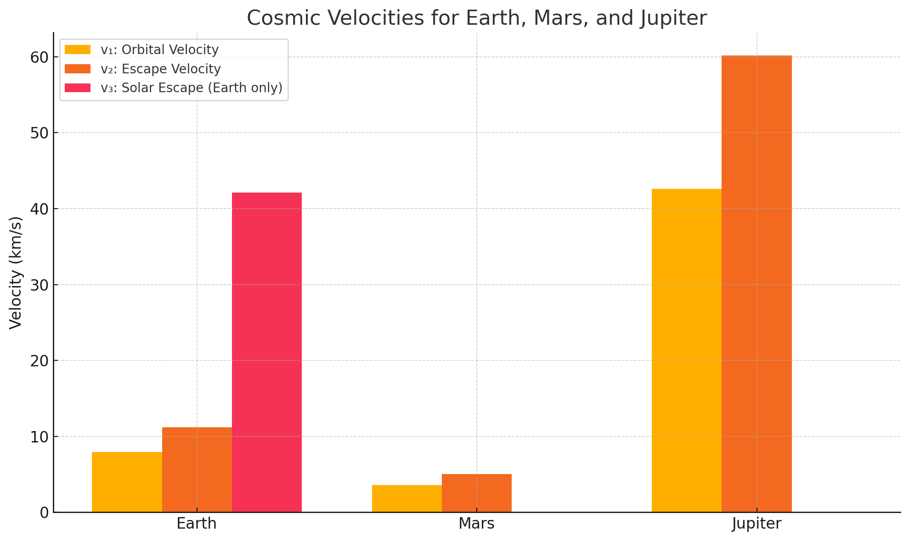

Problem 2
Escape Velocities and Cosmic Velocities
“The Earth is the cradle of humanity, but one cannot remain in the cradle forever.” – Konstantin Tsiolkovsky
Overview
Cosmic velocities define the speeds needed for different types of motion under a planet’s gravitational pull. These thresholds are fundamental to space exploration, from placing satellites in orbit to launching probes into interstellar space.
Definitions of Cosmic Velocities
First Cosmic Velocity (Orbital Velocity)
- The minimum speed required to stay in a stable circular orbit just above a planet’s surface. $$ v_1 = \sqrt{\frac{G M}{r}} $$
Derivation:
Equating gravitational force to centripetal force:
Second Cosmic Velocity (Escape Velocity)
- The minimum speed required to completely escape the gravitational field of a planet without further propulsion. $$ v_2 = \sqrt{2} \cdot v_1 = \sqrt{\frac{2 G M}{r}} $$
Derivation:
From energy conservation:
Initial kinetic energy = Gravitational potential energy at surface:
Third Cosmic Velocity (Solar Escape Velocity)
- The speed needed to escape the gravitational pull of the Sun from Earth’s surface.
- This includes Earth’s orbital motion and the Sun’s gravitational field.
- Approximate value:
$$ v_3 \approx 42.1 \text{ km/s (from Earth)} $$
Derivation (approximate):
Using escape velocity from the Sun’s gravity at Earth’s orbit:
Parameters and Equations
To compute these velocities, we use the following parameters:
| Planet | Mass (kg) | Radius (m) |
|---|---|---|
| Earth | \(5.972 \times 10^{24}\) | \(6.371 \times 10^6\) |
| Mars | \(6.417 \times 10^{23}\) | \(3.3895 \times 10^6\) |
| Jupiter | \(1.898 \times 10^{27}\) | \(6.9911 \times 10^7\) |
Visual Comparison of Velocities
The following chart shows the first, second, and third cosmic velocities for Earth, Mars, and Jupiter. For solar escape (v₃), only Earth is shown.

Real-World Applications
| Mission Type | Required Velocity |
|---|---|
| Placing a satellite in orbit | \(v_1\) |
| Sending a spacecraft to the Moon or Mars | \(v_2\) |
| Voyager, New Horizons, Interstellar missions | \(v_3\) |
Applying Cosmic Velocities
- A rocket launching from Earth must first reach orbital velocity (v₁) to stay in space.
- To break free from Earth’s gravity, it must accelerate to escape velocity (v₂).
- To leave the Solar System, like the Voyager missions, it must achieve the third cosmic velocity (v₃).
Conclusion
-
First cosmic velocity lets you orbit.
-
Second cosmic velocity lets you escape.
-
Third cosmic velocity lets you leave the Solar System.
These values are not just theoretical—they define the thresholds every rocket must overcome in real missions.